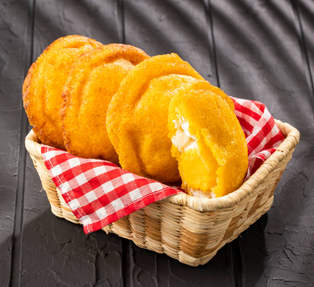

Arepas de Huevo Recipe

Arepas de Huevo
To make Colombian runny arepas de huevo, start by mixing pre-cooked cornmeal (masarepa), warm water, and a pinch of salt in a bowl until you have a smooth, soft dough. Shape the dough into small balls and flatten them into thick discs. Heat oil in a deep pan and fry each arepa until it puffs up and turns golden on both sides. Remove and carefully slit open one edge to create a small pocket. Crack a fresh egg into the opening, then gently seal the edge by pinching the dough together. Return the arepa to the hot oil and fry again until fully cooked and crisp, allowing the egg inside to remain slightly runny. Drain on paper towels, sprinkle with a little salt, and enjoy them hot for breakfast or as a savory snack.
List of Ingredients
- 2 cups pre-cooked cornmeal (masarepa, such as P.A.N.)
- 2 cups warm water (adjust as needed)
- ½ teaspoon salt
- 6 large eggs
- Vegetable oil (for frying)
- Optional: a pinch of sugar or butter for extra flavor
Steps for this delicous dish
- In a large bowl, mix the pre-cooked cornmeal and salt together.
- Gradually add warm water while kneading until a soft, smooth dough forms.
- Divide the dough into equal portions and roll each piece into a ball.
- Flatten each ball into a thick disc about 4–5 inches wide.
- Heat vegetable oil in a deep frying pan over medium-high heat.
- Carefully place each arepa in the hot oil and fry until it puffs up and turns golden, about 2–3 minutes per side.
- Remove the arepas and drain on paper towels for a few seconds.
- Use a knife to make a small slit along the edge of each arepa to form a pocket.
- Crack one egg into each arepa through the slit, being careful not to break the yolk.
- Seal the opening by pinching the dough edges together.
- Return the filled arepas to the hot oil and fry again until golden and crisp, about 1–2 minutes per side.
- Drain on paper towels, sprinkle with a little salt, and serve hot while the egg is still runny.
Home